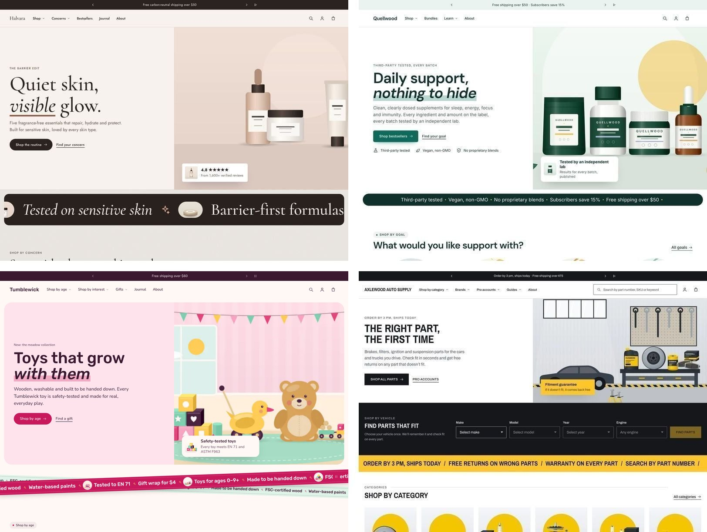
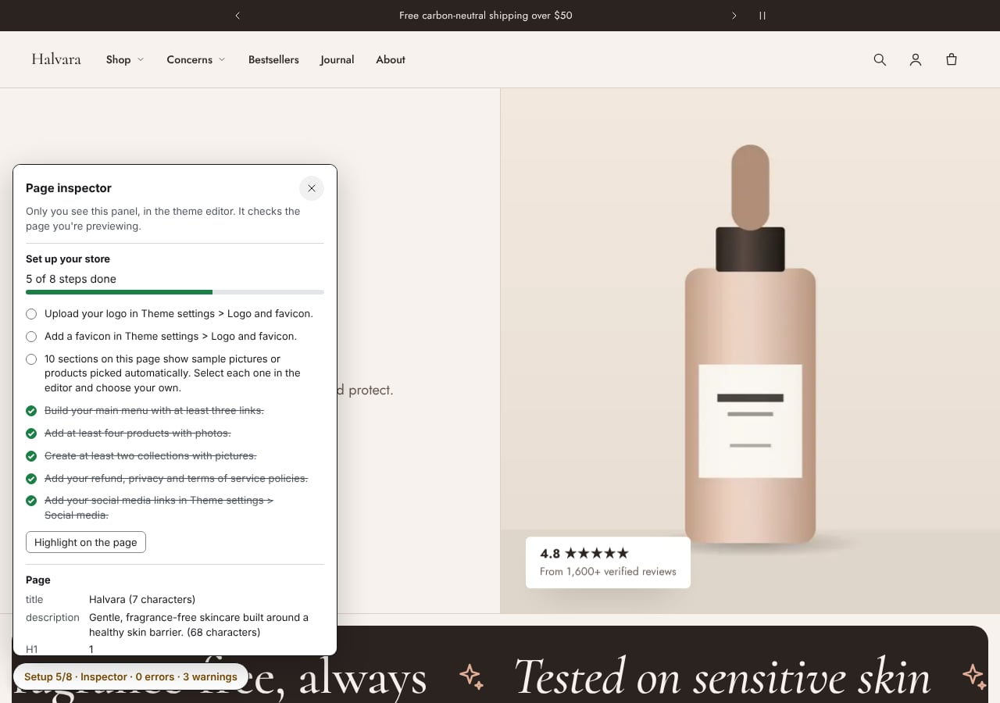

Gamut: getting started
Gamut is a conversion-focused theme with four styles: Gamut (beauty), Sprig (supplements and wellness), Pinwheel (toys and kids) and Gearbox (auto parts). This guide takes you from install to a store you'd be happy to publish. Most stores need about 15 minutes for the basics.

Other pages in this guide:
- Styles and the product data they use
- Features and where to find them
- Questions and troubleshooting
- Support
- Version history
Try it on your own store first
You can try Gamut for free before you buy. In the Theme Store, click Try theme. Gamut is added to your theme library unpublished, and you can customize it as much as you like. You only pay when you publish it.
Gamut shows your own catalog from the first minute. Until you choose products, collections or pictures for a section, it fills that section with your store's products and collections. You see your store in the new theme straight away, not a page of grey boxes. The banner at the top uses a wide collection picture, or, if your collections don't have one, shows three of your products side by side.
The setup guide in the editor
The guide is off when you install the theme. To turn it on, open Online Store > Themes > Customize and check Theme settings > SEO and structured data > Show page inspector in the theme editor. A small badge then sits in the bottom corner of the preview, for example Setup 5/8 · Inspector · 0 errors · 2 warnings. Only you see it; customers never do. Click it to open the panel.

Set up your store lists the steps that matter most and checks them off as you go:
| Step | Where to do it |
|---|---|
| Upload your logo | Theme settings > Logo and favicon |
| Add a favicon | Theme settings > Logo and favicon |
| Build a main menu with at least three links | Admin > Content > Menus (Open in admin in the panel) |
| Add at least four products with photos | Admin > Products |
| Create at least two collections with pictures | Admin > Products > Collections |
| Add refund, privacy and terms of service policies | Admin > Settings > Policies |
| Add your social media links | Theme settings > Social media |
| Replace sample content on the page | Click Highlight on the page, then select each highlighted section and choose your own products, collections or pictures |
Some steps only appear on pages that use a feature:
- Vehicle finder: add your vehicle list and tag parts with the vehicles they fit.
- Gift finder: fill in the age group metafield.
- Supplement Facts: add the facts to each product.
The rest of the panel checks the page as you edit:
- Page: title, description, headings and image text for search engines.
- Colors: text that is hard to read in any color scheme, or on this page.
- Headings and text: headings that are too long, or that overflow on phones.
- Structured data: what Google reads about your products, with links to Google's own test.
To hide the badge again, uncheck Theme settings > SEO and structured data > Show page inspector in the theme editor.
Quick start (15 minutes)
Choose a style.
- When you add Gamut from the Theme Store, pick the style closest to your shop. Each style sets colors, fonts, shapes, motion and a home page layout.
- Fine-tune it in Colors and Typography.
- Every section from every style is available in every style, so you can rebuild any layout you saw in a demo store (see features).
Brand it.
- Logo and favicon: Theme settings > Logo and favicon.
- Color schemes: Theme settings > Colors. Every section picks one of your schemes, so changing a scheme updates the whole store. The inspector warns you if a scheme has poor contrast.
Header and footer.
- Click Header to choose your main menu, logo position and search style.
- Click Footer to choose its menus, text and contact details, payment icons, policies and the large store name.
Home page. Go through the sections from the top. For each one, choose your own collection, products or picture, and rewrite the sample text. The sample text in the stats, the hero card and the reviews is there to show the layout. Replace every number and claim with your own before you publish.
Product page. Open any product and go to the Default product template. Turn on the blocks you need:
- quantity breaks, delivery estimate, trust badges;
- size guide, specs table, Supplement Facts, vehicle fitment.
Most blocks read product metafields, so you fill them in once per product in the admin (see styles and data).
Pages. For About, FAQ, Shipping and returns or a lookbook, choose one of Gamut's ready-made page templates (see features). Your page text appears at the top, with designed sections below it.
Cart. In Theme settings > Cart, choose:
- a drawer or a cart page;
- rewards progress: the free shipping threshold, plus up to two more rewards with their own amount and name, such as "Free gift" at $90 or "15% off" at $150. Each reward needs a matching free shipping rate or automatic discount in Discounts: the bar only shows progress, and checkout applies the discount;
- product suggestions;
- an optional gift wrap product.
Check and publish.
- Turn on the page inspector (see above) and open it on the home page, a collection and a product. Fix anything red.
- Preview on mobile.
- Publish.
Motion and speed
Motion: Gamut animates gently. Content rises in as you scroll, the hero picture settles, and pages change smoothly.
- Choose Subtle, Expressive or None in Theme settings > Animation.
- Visitors who turn on "reduce motion" on their device never see these animations.
Speed: pages load ahead of a click in Chrome and Edge, so they open almost instantly. You can switch this off in the same settings group.
Need help?
Send us a message from the support page. We reply within two business days. Please include:
- your store address;
- the page and the section;
- a screenshot if you can.